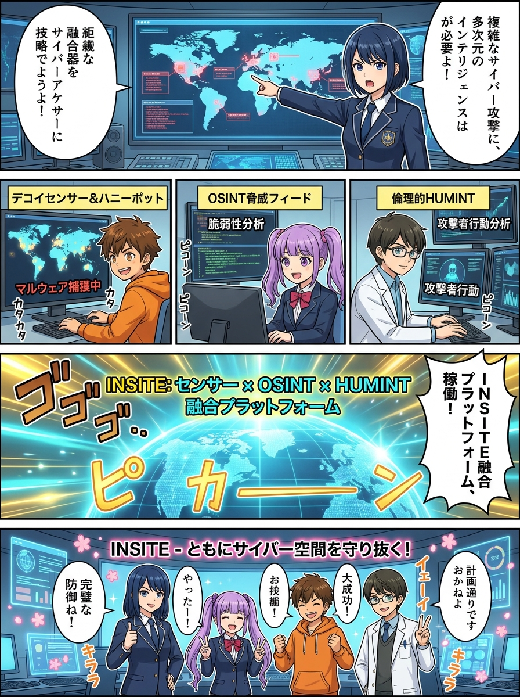
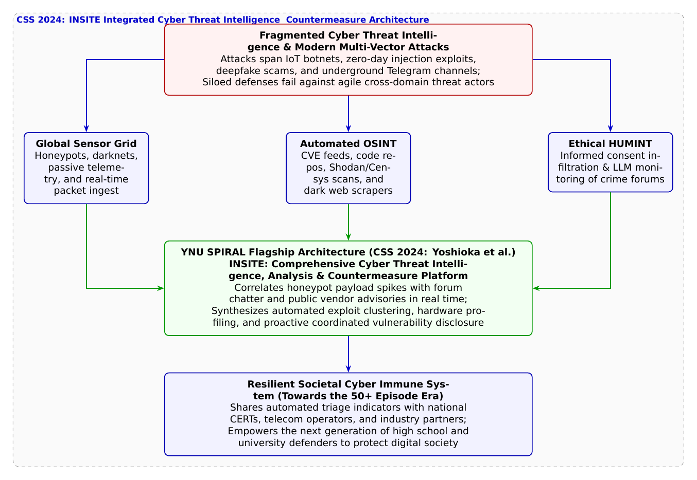

🎨 4コマ漫画挿絵（文字なし）
AI高解像度生成
▲ 【挿絵】青葉台高校 情報科学部＆帝都科学大学サイバーディフェンス・ラボでの実践シーン
💬 4コマ漫画キャラクターセリフ (Story Dialogue Script)
日・英バイリンガル (JA / EN)[蓮]「攻撃者はこれらを巧妙に組み合わせて隙を突いてくるのに、守る側が縦割りじゃ防ぎきれない！」
[Ren] "Threat actors combine multi-vector attacks, but siloed defenses leave gaping blind spots!"
[結衣]「点と点が繋がり、星座のように脅威の全体像（アタックキャンペーン）が浮かび上がります！」
[Yui] "Connecting isolated data dots like a luminous constellation, mapping the entire attack campaign!"
[葵]「すごい！ 個別の戦いじゃなくて、社会全体がウイルスに負けない『抗体（サイバー免疫）』を持ったみたい！」
[Aoi] "Incredible! Instead of fighting alone, our entire digital society developed a collective cyber immune system!"
[葵・蓮・結衣]「未来のデジタル社会を守る守護者として……私たちの探求は、ここから始まります！」
[All] "As guardians of the future digital society... our grand journey begins here!"
📖 小説本文
初冬の茜色に染まる青葉台高校。放課後の情報科学部室には、部員全員の熱気が満ちていた。
壁一面に並べられた4台の巨大モニターには、これまで部室で学んできたあらゆるサイバー防衛の観測データがひしめき合っていた。
左のモニターには、世界中に設置されたハニーポット群が捉えた数万件の攻撃パケット。 中央のモニターには、CensysやShodanから収集された露出IoT機器のプロファイリングマップ。 右のモニターには、ダークウェブやTelegramなどのアンダーグラウンドフォーラムから倫理的に収集された脅威アクターの会話ログ。
「……ハニーポットで捕まえた不審なシェルスクリプト。ネット上で公開されたばかりの新しいCVE脆弱性情報。そして、闇フォーラムで交わされている攻撃ツールの売買チャット」
橘葵がモニターを指差しながら、深く息を吐き出した。
「一つひとつの技術はすごいって分かったけれど……これだけ情報がバラバラに散らばっていると、いま現実に『どこで誰が何を狙っているのか』という全体像を掴むのって、本当に難しいね」
「その通りです、葵先輩」
白石結衣がノートPCを膝の上で開きながら頷いた。
「現代の高度持続的脅威（APT）や大規模ボットネット攻撃は、単一の経路だけで完結することはありません。脆弱性の公開を察知した攻撃者が、アンダーグラウンドで情報交換を行い、数時間後には自動化されたスキャナーで世界中の無防備なルーターを一斉に攻撃します。個々のデータを別々の部署が孤立して（サイロ化して）見ていては、常に後手後手に回ってしまうのです」
神崎蓮が拳をぎゅっと握りしめた。
「ハードウェア解析、暗号数理、トラフィック監視、そして人間の行動心理……。守る側の知恵も、一つに束ねられなければ勝てないんだ」
「その答えが、ここにあるよ」
部室のドアを開けて入ってきた城崎悠真が、中央のメインコンソールに歩み寄り、キーボードへ静かにコマンドを入力した。
画面全体が暗転し、次の瞬間――青く澄み切った光とともに、一本の巨大なプラットフォームの名前がスクリーンいっぱいに浮かび上がった。
**『INSITE: 攻撃観測網とOSINT/HUMINTの融合によるサイバーセキュリティ情報収集・分析・対策機構』**
「INSITE（インサイト）……！」葵が息を呑んだ。
「これこそが」悠真が誇らしげに語った。「僕たちが所属する横浜国立大学SPIRALの**吉岡克成教授、佐々木貴之准教授、インミンパパ特任准教授、九鬼琉氏、宮本岩麒氏ら**が、情報処理学会CSS 2024で発表した、国家規模の統合サイバー脅威インテリジェンス（CTI）基盤構想なんだ」
悠真はコンソールの相関分析エンジンを始動させた。
「INSITEの最大の特徴は、これまで独立していた3つの世界――**『センサー観測網（ハニーポット）』**、**『公開情報（OSINT）』**、そして**『倫理的・合意に基づく人的情報収集（HUMINT）』**を、AIと知識グラフによってリアルタイムに縦横無尽にクロス照合（融合）させる点にある」
画面上で、驚くべき光景が展開された。
世界中のおとりサーバーで未明に急増した未知のパケットシグネチャ（第40話）が検知された瞬間、INSITEのエンジンが自動でアンダーグラウンドチャットの兆候（第34話）を照合。さらにBasic認証のLLM解読（第47話）とWebUIスキャン（第46話）から、狙われている特定の家庭用ルーター機種をピンポイントで特定した。
そして即座に、影響を受ける通信事業者や一般家庭に向けて、防衛ルール（シグネチャ）と注意喚起が完全自動で配信されたのだ。
「すごい……！ バラバラだった情報の点と点が結ばれて、まるで夜空の星座みたいに敵の手口が丸見えになった！」葵が歓声をあげる。
「まるで社会全体がウイルスに立ち向かう**『サイバー免疫システム』**ですね」結衣が感動の面持ちで呟いた。
「侵入されてから慌てるのではなく、兆候を多角的に捉えて事前に社会へ抗体を配る。これこそが、最先端の学術研究が目指す究極の防衛の姿なんだ」
蓮が画面を真っ直ぐ見つめながら、静かに、しかし熱く語った。
「ハードウェアの分解から始まって、暗号の数理、AIの攻防、そして社会を包む統合基盤まで……。僕たちがここで学んできたこと全部が、一本の大きな道に繋がっていたんだ」
部室の窓の外には、夕暮れから深い藍色へと移ろう美しい夜空が広がり、一番星が静かに瞬いていた。
「葵ちゃん、蓮くん、結衣ちゃん」
悠真が部員たちを温かく見つめながら微笑んだ。
「僕が大学でSPIRALの研究者たちと出会って確信したのは、サイバーセキュリティとは単なるコンピューターの防御技術ではないということだ。それは、人々が恐怖や騙しに怯えることなく、自由に夢を語り合える安全なデジタル社会を築くための、最も尊い人文学であり、工学なんだ」
「うん！」葵が満面の笑顔で頷いた。
「最初はパスワードの仕組みすらよく知らなかった私でも、みんなと一緒に学んで、こんなに広い世界があるって知ることができた。情報科学って、本当にワクワクして、誰かを幸せにできる素敵な力なんだね！」
「私たちの探求は、まだ始まったばかりです」結衣が微笑み、蓮が力強く頷く。
「大学へ進学しても、大人になってどんな専門に進んでも……僕たちは世界を守る盾であり続けます！」
モニターに映る「INSITE」の光の星座と、四人の瞳に宿る知性の輝きが重なり合う。
高校の小さな部室から始まった物語は、大学の最先端研究を経て、世界中を優しく包み込む未来のサイバー防衛の地平へと、力強く羽ばたいていった。
（第2部 横浜国大SPIRAL探訪編・堂々完結）
---
📊 セキュリティ構造図解 (TikZ LuaLaTeX生成)
国家安全基準・工学図解
▲ 【技術構造図】IPAデジタルスキル標準・国際規格に準拠した仕組みのモデル化